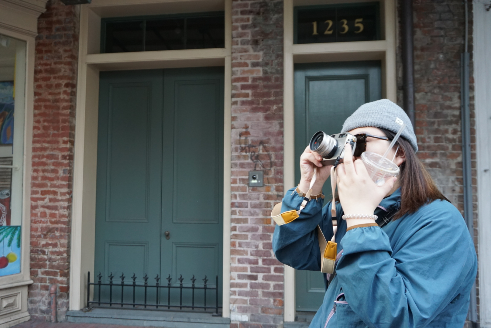
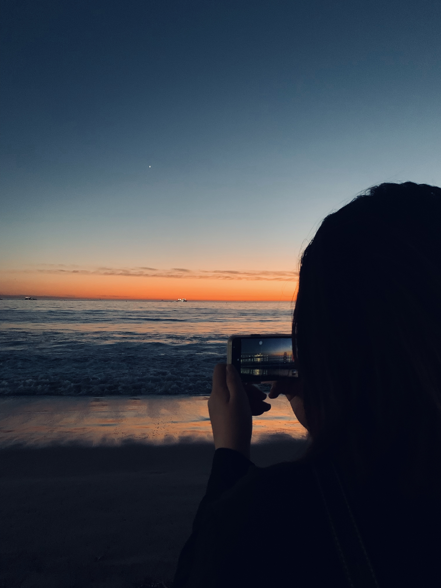
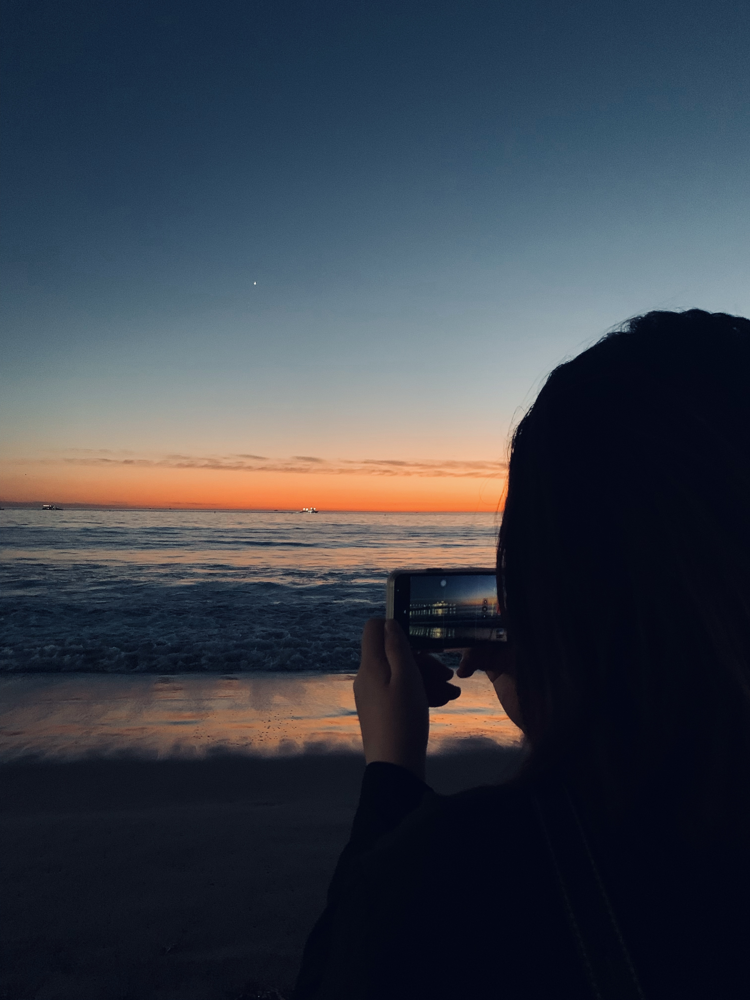
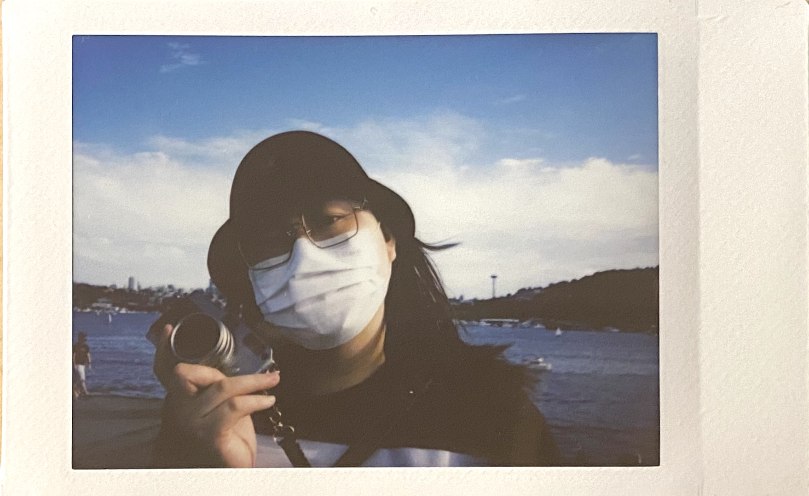
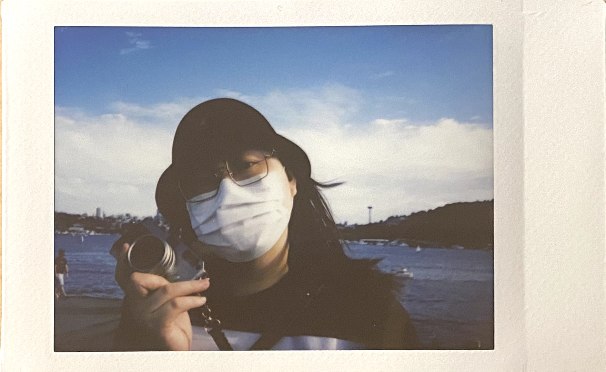

hometown
My hometown is Taiyuan, the capital and largest city of Shanxi Province, China. It is one of the main manufacturing bases of China. Throughout its long history, Taiyuan was the capital or provisional capital of many dynasties in China, hence the name Dragon City.
Seattle
I spent my last 4 years in Seattle as an undergraduate student in University of Washington. Seattle is a seaport city on the West Coast of the United States. It is the seat of King County, Washington. With a 2020 population of 737,015, it is the largest city in both the state of Washington and the Pacific Northwest region of North America. The Seattle metropolitan area's population is 4.02 million, making it the 15th-largest in the United States. Its growth rate of 21.1% between 2010 and 2020 makes it one of the nation's fastest-growing large cities.
 

 
